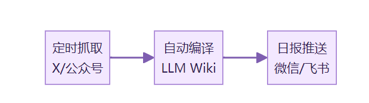
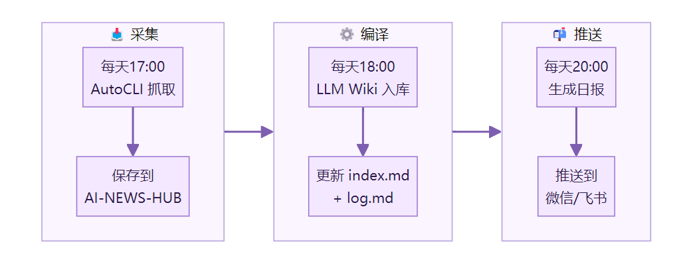

上一篇聊了为什么知识库搭完之后还是会荒废。核心问题是「人在给 AI 打工」。
这篇把解决方案落地。
如果你跟着我之前的教程搭过 LLM Wiki 知识库。这篇是续集。
教你把手动维护的知识库。升级成自动运转的。
搭完之后。信息自己进来。自己整理。整理完了还会推送告诉你。
先看流程。

三个阶段。每个阶段独立可用。串起来效果最好。
前提条件。
你需要一台能跑 AI Agent 的电脑。Hermes、Claude Code、Kiro 都行。
需要 Chrome 浏览器。并且已经登录了你想抓取的平台。
需要一个已经搭好的 Obsidian 知识库。如果还没搭。先看我上一篇教程。
阶段一：让信息自己进来
这个阶段解决「每天手动找文章」的问题。
第一步：安装 AutoCLI
AutoCLI 是一个开源的浏览器信息抓取工具。GitHub 搜 autocli-skill 就能找到。
不需要 API Key。直接复用你 Chrome 里已有的登录态。支持 X、公众号、B站、知乎、Reddit 等平台。
打开你的 AI Agent。告诉它。
帮我安装 AutoCLI 的 skill
Agent 会自动完成安装和配置。
装完之后。先测试一下。
用 AutoCLI 抓取 X 上今天 AI 相关的点赞 Top 10
我第一次跑这条命令的时候。等了大概两分钟。然后10篇推文整整齐齐地出现在终端里。
如果能正常返回内容。说明抓取通道没问题。
第二步：在 Obsidian 里建一个收件箱
在你的知识库根目录下。建一个文件夹。
my-wiki/
├── raw/
├── wiki/
├── AI-NEWS-HUB/ ← 新建这个
│ └── x-ai-top10-daily/
├── AGENTS.md
AI-NEWS-HUB 是所有自动抓取内容的落地点。
x-ai-top10-daily 是 X 平台每日 Top 10 的专属目录。
以后想加公众号、Reddit。在 AI-NEWS-HUB 下面再建子目录就行。
第三步：设置定时抓取
在 AI-NEWS-HUB 路径下。告诉 Agent。
每天下午5点，自动抓取 X 上 AI 相关的点赞 Top 10，保存到 x-ai-top10-daily 目录，按日期建子文件夹归档
Agent 会创建一个定时任务。每天自动执行。
抓取的内容会按这样的结构存放。
x-ai-top10-daily/
├── 2026-04-19/
│ ├── tweet-1.md
│ ├── tweet-2.md
│ └── ...
├── 2026-04-20/
│ └── ...
验证：第二天下午五点过后。打开目录。有新的日期文件夹和内容。就对了。
阶段二：让信息自己变成知识
这个阶段解决「素材堆了一堆但没整理」的问题。
第四步：让 Agent 编译 wiki
还是在知识库路径下。告诉 Agent。
把 AI-NEWS-HUB/x-ai-top10-daily 目录下今天的文章，按照 AGENTS.md 的规则编译成 wiki 页面，更新 index.md 和 log.md
Agent 会调用 LLM Wiki 的规则。把原始推文转化成结构化的知识页面。
我第一次跑的时候。10篇推文被压缩成了4个概念页和1个对比页。重复的信息合并了。关键观点提炼出来了。
生成的 wiki 页面会出现在 wiki/ 目录下。带摘要。带来源标注。带双链。
第五步：把编译也设成定时任务
每天下午6点，自动把 AI-NEWS-HUB 目录下当天的内容编译成 wiki 页面
为什么是6点。因为抓取任务5点跑。留一个小时的缓冲。确保抓取完成后再编译。
验证：第二天晚上。打开 wiki/ 目录和 index.md。有新增的页面。就对了。
阶段三：让知识库主动找你
这个阶段解决「知识库更新了但你不知道」的问题。
第六步：接入推送渠道
微信和飞书都可以。告诉 Agent。
帮我接入个人微信渠道
Agent 会配置微信接入。完成后给你一个二维码链接。
用微信扫这个二维码。等几秒。Agent 会提示「连接成功」。
如果用飞书。告诉 Agent「帮我创建一个飞书机器人」。它会给你一个 webhook 地址。复制到飞书群设置里就行。
整个过程大概五分钟。
第七步：设置日报推送
每天晚上8点，生成今日知识库更新日报，包含新增了哪些内容、有哪些值得关注的信息，推送到我的微信
日报不需要长。一屏能看完就好。标题加一句话摘要。
验证：当天晚上8点。微信收到日报消息。就对了。
完整流程一览

三个定时任务。串成一条链。每天自动跑。
第一次做的建议
先只跑阶段一。确认抓取没问题。
跑两三天之后。再加阶段二。确认编译质量。
最后再接推送。
不要一口气全配完。出了问题不知道是哪一层的。
用最小的数据量练手。先只抓 X 一个平台。Top 10 就够了。
等整条链跑顺了。再加公众号、Reddit、Hacker News。
容易踩的坑
第一个坑。Chrome 没登录目标平台。
AutoCLI 复用的是浏览器的登录态。Chrome 没登录 X。它就抓不到东西。抓取前确认一下登录状态。
第二个坑。定时任务的时间间隔太短。
抓取和编译之间至少留一个小时。如果编译任务在抓取还没完成时就启动了。会漏掉内容。
第三个坑。AGENTS.md 没有更新。
你原来的 AGENTS.md 是为手动 ingest 写的。现在多了自动抓取的内容。需要加一些规则。
建议在 AGENTS.md 里加一段。
## 自动抓取规则
- AI-NEWS-HUB/ 下的内容由定时任务自动写入，不手动修改
- 编译时按来源平台分类（X、公众号、Reddit 等）
- 自动生成的 wiki 页面标注 [来源：自动抓取]
- 与 raw/ 手动资料的 wiki 页面区分命名
第四个坑。日报太长没人看。
日报的目的是提醒你「知识库今天更新了」。不是把所有内容复述一遍。控制在一屏以内。
上次搭的是骨架。这次装的是引擎。
骨架让知识库能记住东西。引擎让它自己转起来。
试试看。从一个定时抓取开始。
你会发现。不用动手。它也能自己长大。
这是 LLM Wiki 系列的第三篇。第一篇搭骨架。第二篇找问题。这篇装引擎。
后面如果有新的玩法。我会继续写。
参考资料：
[1] Karpathy LLM Wiki gist：https://gist.github.com/karpathy/442a6bf555914893e9891c11519de94f
[2] Karpathy「LLM Knowledge Bases」长帖：https://x.com/karpathy/status/2039805659525644595
[3] AutoCLI — 开源浏览器信息抓取工具：https://github.com/nashsu/autocli-skill
[4] AutoCLI 官网：https://autocli.ai/
下方是赋能君的AI学习交流永久免费星球，想学习更多内容，欢迎扫码加入。
🙌 如果你阅读到这里，说明我们对信息的认可区域是有一定交集的，可以说我们是同道中人，所以如果你有自认为不错的信息获取渠道，欢迎留言或者私聊我，谢谢。
都看到这里了，就给个关注吧👀：
喜欢我的文章，可以请你右下角顺手来一波点赞&在看&分享三连么👉